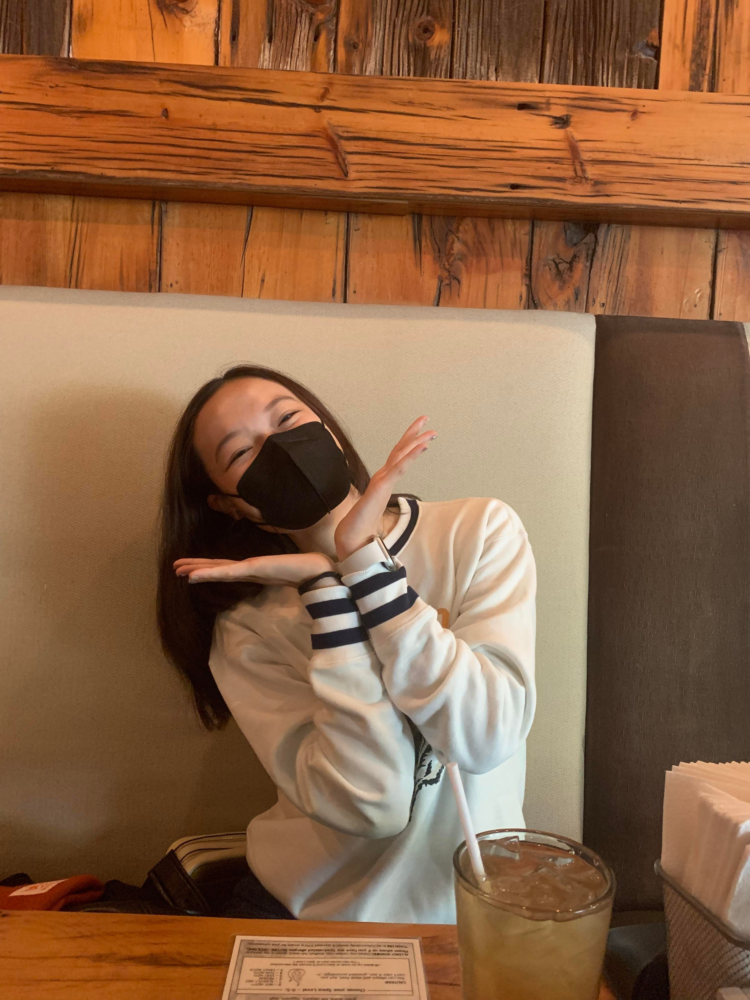
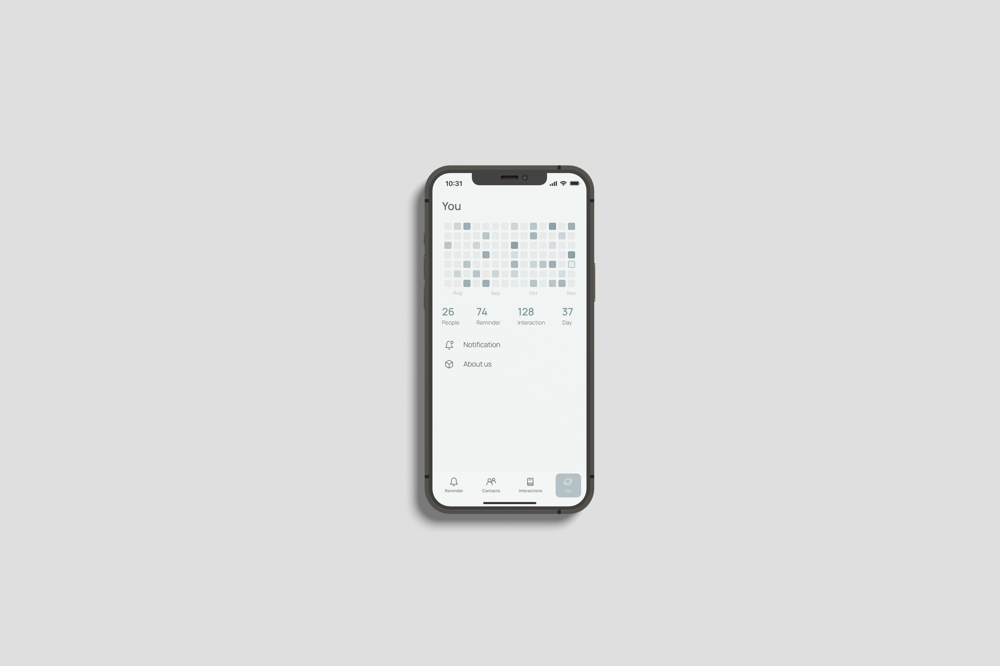

Ongoing Journey - October 2022
Nicole, birthday, hiding intentions
Happy 21, birthday girl :)A group of friends hosted a surprise for Nicole’s birthday at 2:30 pm, after lunch with Nicole we were standing at the bus stop around 2 pm and suddenly thought
Wait if I am getting to the same place to surprise nicole, how can I get to the same place without surprising nicole :D?
And that’s when I realized I was quite bad at lying lol, wasn’t able to find a way to tell Nicole that I am going to the same place when it’s in the exact opposite direction of where I was supposed to head to
As a kid there was very little cost in speaking our minds in my family, so I guess through time, hiding my intention really did become one of my duller abilities. I would be the kind of guy that asks ‘what do you want for your birthday and just get the gift, not realizing that it’s the feeling of being remembered and cared for that matters more. Nicole mentioned multiple time that ‘it’s just a feeling and Steve simply refers me as ‘研磨间的驴’, guess they do have a point lol.
More so an observation than a reflection, I understood myself better when I interacted with someone else. I tend to be transparent with my thought, choosing to be silent when I feel insecure, and currently in the process of feeling the more emotional side of things.
So in the end, jump off the bus a few stops early, ran to the corner and called an uber, told the driver I was too lazy to walk the 5-minute walk and she believed it :D
Helen, confidence, I will
 Scott Hall where I usually work with Helen
Scott Hall where I usually work with Helen
Helen absolutely hates it when people say ‘I hope’ or ‘I wish’, she mentioned these words meant carelessness and fear of taking responsibility.
I tend to use these words when I feel uncertain and want to be safe, thinking now, these phrases directly translate to a lack of confidence.
While I was learning PARA read similar things, when creating a project you should look for a verb that describes done, finalize, submit, making the action transparent and yourself accountable
The way we present matters just as much as the material itself was I came to, so started using phrases that boost confidence, namely ‘I will’. ‘I will make a plan for the trip’ and ‘I will resolve this bug and push a PR’ in itself gives me more confidence and certainty, alerting me to complete it.
And I was that ‘people’ at the beginning of the story by the way lol, appreciate the lesson and thought, life really is an ongoing journey.
Shortcuts, perfecting the basics
part of our app mock upsGot a chance to design phone apps and through found that, I went with minimalistic styles because I simply don’t have the basic skills of laying out things differently, I can’t do another style.
That was just the start beginning lol, after I signed the internship started doing competitive analysis with Jimmy, and disturbingly, I had no idea where to begin to dissect an app knowing that I would be a product manager intern soon, the question marks on Jimmy’s head when I told him I don’t know where to start :’)
I am a strong believer of ‘half ass with everything you got’, but recently wondered if I’ve taken too many shortcuts to get to where I am today, ignoring the basics that come before the fancy title/result.
An opposite example for me was TAing, every recitation I would list out three key points, and practice saying them in front of a mirror, the most basic part of presentation. Crystal mentioned that I have something called ‘亲和力’, imagined it was through the time that I practiced saying words while being a TA lol.
Thinking about perfecting the basics, mind went to the dance tutorials on moving legs + shoulders Nicole sent, I will put more emphasis on these starting now.
Thomas, self development, accepting yourself
 After the chat went out for a walk and felt, relived
After the chat went out for a walk and felt, relived
Chat with Thomas this month and talked to him about this frustration, knowing that I put heavy effort into self development, yet yielded little results.
About 20 minutes of rant Thomas just sat and listened, afterwards he talked about his 20s and the dramas he’s being through, summarized into one sentence
You are enough of who you are
And more importantly, surround yourself who also think you are enough.
I swear that’s not the thing he said lol, he mentioned time as a factor that I missed too, this phrase ‘good thing takes time’, I would get to practice it for a long time before it yields results (like workouts!).
So combining all together, continue improving myself (for the sake of improving myself), surround myself with people who accept me, and let time do their work.
I deserve to be loved without doing anything towards it, was one of the takeaways I learned through the conversation. Thomas good luck with your start-up and your relationship, I know things will turn out best for you in the end :)